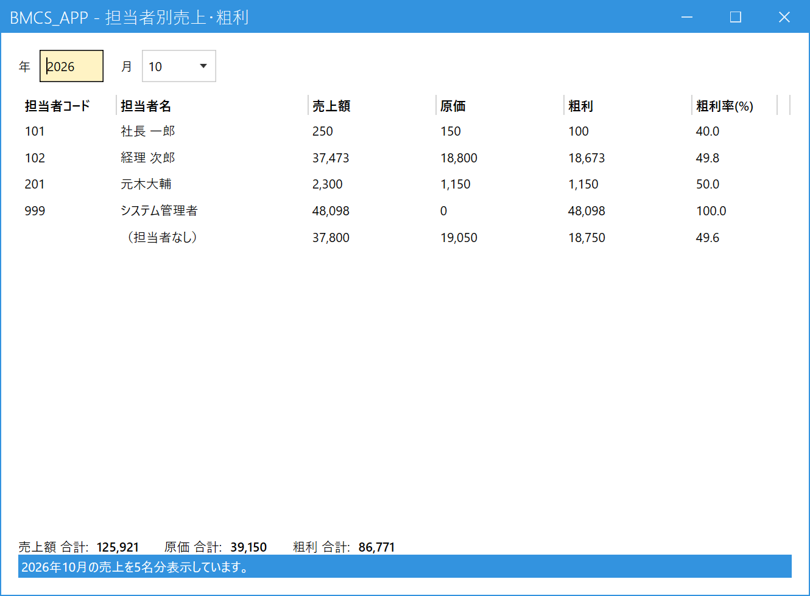

担当者別の売上・粗利を見る
こんなときに使います
「今月、誰がいくら売って、いくら利益が出たか」を確認します。
月ごとに、担当者別の売上額・原価・粗利・粗利率が出ます。見るだけの画面で、データは変わりません。
「今月、誰がいくら売って、いくら利益が出たか」を確認します。
月ごとに、担当者別の売上額・原価・粗利・粗利率が出ます。見るだけの画面で、データは変わりません。
1.月を選んで表示する
メインメニューの「分析」の中の「担当者別売上・粗利」を開きます。開くと今月の集計が表示されます。ほかの月を見るときは、左上の年（4桁）と月の欄を変えると、すぐに表示し直します。

- 年・月：集計する月です。月次締めをしていない月でも見られます。
- 担当者ごとの集計：担当者コード順に、売上額・原価・粗利・粗利率が並びます。
- （担当者なし）：担当者が決まらない売上をまとめた行です（下の「担当者の決まり方」参照）。いちばん下に出ます。
- 合計：全担当者の売上額・原価・粗利の合計です。
2.数字の見かた
| 項目 | 意味 |
|---|---|
| 売上額 | その月の売上の税抜金額。返品・値引を差し引いた金額です。 |
| 原価 | 数量 × 原価単価 の合計。 |
| 粗利 | 売上額 − 原価。 |
| 粗利率(%) | 粗利 ÷ 売上額。売上額が0のときは空欄です。 |
担当者の決まり方
- 売上伝票の担当者欄に入っている人。
- 伝票の担当者が空なら、得意先マスタの営業担当。
- どちらも無ければ「（担当者なし）」。
3.並べ替えとCSV保存
- 並べ替え：列の見出しをクリックすると、その列の小さい順（▲）に並びます。もう一度クリックすると大きい順（▼）になります。開いた直後は粗利の大きい順です。
- CSV保存：「CSV保存」ボタンを押して保存先を決めると、画面に見えている並び順のままCSVファイルに保存できます。Excelで開けます。
集計は、画面を開くたび（年・月を変えるたび）にその時点の売上から計算し直します。取り消した売上は含みません。
請求の集約（支店の売上を本社にまとめて請求する設定）があっても、売上伝票の得意先のまま担当者に計上します。